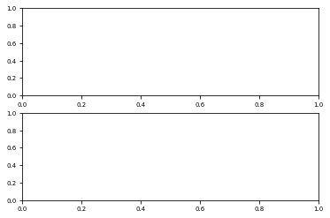

RE-EDS - PEOE - Energy Offset Estimation¶
[7]:
#Imports
import sys, os
sys.path.append(os.path.dirname(os.getcwd()))
import numpy as np
from matplotlib import pyplot as plt
%matplotlib inline
import reeds
from pygromos.files import repdat, imd
from reeds.function_libs.analysis import visualisation as vis
from reeds.function_libs.analysis import analysis, file_management
vis.figsize = [16,9]
Parse Data¶
[9]:
#Define data path:
in_imd_path = "/cluster/work/igc/bschroed/REEDS/CHK1/complex_d5/c_eoff/input/repex_eoff.imd"
data_dir = "/cluster/work/igc/bschroed/REEDS/CHK1/complex_d5/c_eoff/analysis/data"
out_prefix = "CHK1_disres5_complex_eoff_energies"
[13]:
#parse
energy_trajectories = file_management.parse_csv_energy_trajectories(data_dir, out_prefix)
imd_file = imd.Imd(in_imd_path)
Estimate Offsets¶
[24]:
initial_Eoff_guess = [0 for x in range(int(imd_file.REPLICA_EDS.NUMSTATES))]
s_values = list(map(float, imd_file.REPLICA_EDS.RES))
out_path = []
pot_tresh= 0
frac_tresh = [0.9]
eoff_statistic = analysis.estimate_Eoff(ene_ana_trajs=energy_trajectories,
Eoff=initial_Eoff_guess, s_values=s_values,
pot_tresh=pot_tresh, frac_tresh=frac_tresh,
out_path=".")
converged after 1 steps
converged after 1 steps
converged after 1 steps
converged after 1 steps
converged after 1 steps
converged after 1 steps
converged after 1 steps
converged after 1 steps
converged after 1 steps
converged after 1 steps
converged after 1 steps
converged after 1 steps
converged after 1 steps
converged after 1 steps
converged after 1 steps
converged after 1 steps
converged after 1 steps
converged after 1 steps
converged after 1 steps
converged after 1 steps
converged after 1 steps
REEDS - Eoff Estimation:
========================
Energy Offsets for each Replica
| S | e1 | e2 | e3 | e4 | e5 | iterations |
|--- |--- |--- |--- |--- |--- |--- |
|1.0000 |0.0 | 7.2231 | 123.794 | -95.6342 | -209.2493 | 1|
|0.7500 |0.0 | 7.2231 | 116.9158 | -101.6541 | -209.2493 | 1|
|0.5620 |0.0 | 7.2215 | 59.011 | -120.676 | -209.2493 | 1|
|0.4220 |0.0 | 7.2219 | 59.0114 | -120.6756 | -209.2489 | 1|
|0.3160 |0.0 | 6.8981 | 56.6969 | -118.8075 | -209.2485 | 1|
|0.2370 |0.0 | 6.894 | 56.6928 | -118.7958 | -209.2526 | 1|
|0.1780 |0.0 | 6.5972 | 55.6198 | -123.1055 | -209.2324 | 1|
|0.1330 |0.0 | 7.5328 | 56.5548 | -123.2553 | -208.2972 | 1|
|0.1000 |0.0 | 6.5729 | -3.8203 | -175.1889 | -208.0399 | 1|
|0.0750 |0.0 | 52.1492 | 46.4659 | -124.9322 | -162.4993 | 1|
|0.0562 |0.0 | 33.6502 | 41.8299 | -142.1719 | -170.8979 | 1|
|0.0422 |0.0 | 36.5574 | -0.1896 | -110.416 | -143.5478 | 1|
|0.0316 |0.0 | 47.2498 | 7.0766 | -74.5805 | -118.5838 | 1|
|0.0237 |0.0 | 23.8096 | 3.8686 | -74.567 | -110.2735 | 1|
|0.0178 |0.0 | -6.6166 | -7.3168 | -54.7246 | -101.7631 | 1|
|0.0133 |0.0 | -12.5898 | -3.294 | -48.7105 | -75.7651 | 1|
|0.0100 |0.0 | -7.1602 | -3.1836 | -51.7028 | -66.5458 | 1|
|0.0075 |0.0 | -1.3655 | -2.9095 | -48.7238 | -66.4973 | 1|
|0.0056 |0.0 | -0.8743 | -1.9586 | -49.2801 | -62.4862 | 1|
|0.0042 |0.0 | 1.5589 | -2.0664 | -48.1106 | -62.2341 | 1|
|0.0032 |0.0 | 2.2132 | -1.3666 | -47.9877 | -61.5577 | 1|
Minimum energy count per state
| S | e1 | e2 | e3 | e4 | e5 |
|--- |--- |--- |--- |--- |--- |
| 1.0000 | 0 | 0 | 0 | 0 | 50000 |
| 0.7500 | 0 | 0 | 0 | 0 | 50000 |
| 0.5620 | 0 | 0 | 0 | 0 | 50000 |
| 0.4220 | 0 | 0 | 0 | 0 | 50000 |
| 0.3160 | 0 | 0 | 0 | 0 | 50000 |
| 0.2370 | 0 | 0 | 0 | 0 | 50000 |
| 0.1780 | 0 | 0 | 0 | 0 | 50000 |
| 0.1330 | 0 | 0 | 0 | 0 | 50000 |
| 0.1000 | 0 | 0 | 0 | 2 | 49998 |
| 0.0750 | 0 | 0 | 0 | 4 | 49996 |
| 0.0562 | 0 | 0 | 0 | 32 | 49968 |
| 0.0422 | 0 | 0 | 0 | 231 | 49769 |
| 0.0316 | 0 | 0 | 0 | 1182 | 48818 |
| 0.0237 | 5 | 0 | 7 | 1972 | 48016 |
| 0.0178 | 160 | 21 | 333 | 11749 | 37737 |
| 0.0133 | 235 | 31 | 498 | 13948 | 35288 |
| 0.0100 | 263 | 39 | 581 | 14753 | 34364 |
| 0.0075 | 301 | 48 | 641 | 15255 | 33755 |
| 0.0056 | 323 | 50 | 703 | 15572 | 33352 |
| 0.0042 | 340 | 50 | 733 | 15746 | 33131 |
| 0.0032 | 345 | 51 | 744 | 15799 | 33061 |
Negative energy count per state(pottresh=0)
| S | e1 | e2 | e3 | e4 | e5|
|--- |--- |--- |--- |--- |--- |
1.0000 | 4074 | 1829 | 1116 | 10607 | 50000 |
0.7500 | 4092 | 1833 | 1122 | 10818 | 50000 |
0.5620 | 4092 | 1833 | 1133 | 11048 | 50000 |
0.4220 | 4103 | 1837 | 1157 | 11346 | 50000 |
0.3160 | 4132 | 1849 | 1180 | 11697 | 50000 |
0.2370 | 4182 | 1871 | 1204 | 12087 | 50000 |
0.1780 | 4208 | 1898 | 1230 | 12492 | 50000 |
0.1330 | 4255 | 1935 | 1262 | 12939 | 50000 |
0.1000 | 4296 | 1976 | 1319 | 13473 | 50000 |
0.0750 | 4336 | 2013 | 1363 | 14046 | 50000 |
0.0562 | 4488 | 2106 | 1484 | 15035 | 50000 |
0.0422 | 5295 | 2496 | 1958 | 19102 | 50000 |
0.0316 | 9816 | 4903 | 4452 | 41392 | 50000 |
0.0237 | 16173 | 8932 | 7519 | 50000 | 50000 |
0.0178 | 49655 | 48707 | 46518 | 50000 | 50000 |
0.0133 | 49999 | 49997 | 49977 | 50000 | 50000 |
0.0100 | 50000 | 50000 | 50000 | 50000 | 50000 |
0.0075 | 50000 | 50000 | 50000 | 50000 | 50000 |
0.0056 | 50000 | 50000 | 50000 | 50000 | 50000 |
0.0042 | 50000 | 50000 | 50000 | 50000 | 50000 |
0.0032 | 50000 | 50000 | 50000 | 50000 | 50000 |
Fraction of undersampling energies per state (fractresh=[0.9])
| S | e1 | e2 | e3 | e4 | e5 |
|--- |--- |--- |--- |--- |--- |
| 1.0000 | 0.0815 | 0.0366 | 0.0223 | 0.2121 | 1.0000
| 0.7500 | 0.0818 | 0.0367 | 0.0224 | 0.2164 | 1.0000
| 0.5620 | 0.0818 | 0.0367 | 0.0227 | 0.2210 | 1.0000
| 0.4220 | 0.0821 | 0.0367 | 0.0231 | 0.2269 | 1.0000
| 0.3160 | 0.0826 | 0.0370 | 0.0236 | 0.2339 | 1.0000
| 0.2370 | 0.0836 | 0.0374 | 0.0241 | 0.2417 | 1.0000
| 0.1780 | 0.0842 | 0.0380 | 0.0246 | 0.2498 | 1.0000
| 0.1330 | 0.0851 | 0.0387 | 0.0252 | 0.2588 | 1.0000
| 0.1000 | 0.0859 | 0.0395 | 0.0264 | 0.2695 | 1.0000
| 0.0750 | 0.0867 | 0.0403 | 0.0273 | 0.2809 | 1.0000
| 0.0562 | 0.0898 | 0.0421 | 0.0297 | 0.3007 | 1.0000
| 0.0422 | 0.1059 | 0.0499 | 0.0392 | 0.3820 | 1.0000
| 0.0316 | 0.1963 | 0.0981 | 0.0890 | 0.8278 | 1.0000
| 0.0237 | 0.3235 | 0.1786 | 0.1504 | 1.0000 | 1.0000
| 0.0178 | 0.9931 | 0.9741 | 0.9304 | 1.0000 | 1.0000
| 0.0133 | 1.0000 | 0.9999 | 0.9995 | 1.0000 | 1.0000
| 0.0100 | 1.0000 | 1.0000 | 1.0000 | 1.0000 | 1.0000
| 0.0075 | 1.0000 | 1.0000 | 1.0000 | 1.0000 | 1.0000
| 0.0056 | 1.0000 | 1.0000 | 1.0000 | 1.0000 | 1.0000
| 0.0042 | 1.0000 | 1.0000 | 1.0000 | 1.0000 | 1.0000
| 0.0032 | 1.0000 | 1.0000 | 1.0000 | 1.0000 | 1.0000
New energy offset for each state:
1. 0.0000 +- 0.0000
2. -3.5478 +- 5.0058
3. -3.1565 +- 1.8211
4. -49.8914 +- 2.2856
5. -70.9785 +- 13.3506
---------------------------------------------------------------------------
TypeError Traceback (most recent call last)
<ipython-input-24-698ea995ffb1> in <module>
8 Eoff=initial_Eoff_guess, s_values=s_values,
9 pot_tresh=pot_tresh, frac_tresh=frac_tresh,
---> 10 out_path=".")
~/code/reeds/reeds/function_libs/analysis/analysis.py in estimate_Eoff(ene_ana_trajs, Eoff, s_values, out_path, temp, kb, pot_tresh, frac_tresh, convergence_radius, max_iter, take_last_n, plot_title_prefix, visualize)
416 # plott mean eoffs vs. sf
417 vis.plot_peoe_eoff_vs_s(eoff_per_replica, energy_offsets, title=plot_title_prefix + " - Eoff/s",
--> 418 out_path=out_path + "/" + plot_title_prefix + "_eoffs_vs_s.png")
419 return statistic
420
~/code/reeds/reeds/function_libs/analysis/visualisation.py in plot_peoe_eoff_vs_s(eoff, energy_offsets, title, out_path)
692 ##plot1
693 for i in range(num_stats):
--> 694 ax1.plot(x, y[i] - energy_offsets[i].mean, label=(i + 1), # color=colors[i % repnum],
695 lw=2)
696
TypeError: unsupported operand type(s) for -: 'list' and 'float'

Visualize Results¶
[23]:
eoff_statistic
---------------------------------------------------------------------------
NameError Traceback (most recent call last)
<ipython-input-23-f558ba3c003c> in <module>
----> 1 eoff_statistic
NameError: name 'eoff_statistic' is not defined
[ ]: